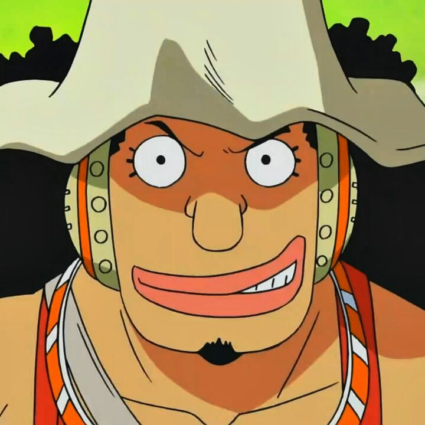

Usopp
Usopp é o Atirador dos Piratas do Chapéu de Palha. Ele é o quarto membro da tripulação e o terceiro a entrar, fazendo isso no final do Arco Vila Syrup. Embora ele tenha deixado a tripulação durante o Arco Water 7, ele se juntou novamente ao final do Arco Pós-Enies Lobby. Usopp é o filho de Yasopp e Banchina. Ele nasceu e foi criado na Vila Syrup, e era o "capitão" dos Piratas Usopp e o amigo mais próximo de Kaya. Após colaborar com os Chapéus de Palha para derrotar Kuro e os Piratas do Gato Preto, ele foi convidado a se juntar à tripulação.